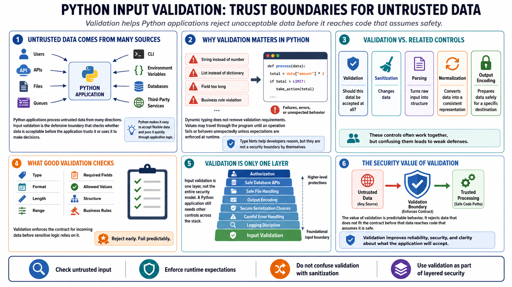

Why Input Validation Matters in Python
Connecting to LMS... Progress: in progress

Narration
Python applications process untrusted data from many directions: users, APIs, files, queues, command-line interfaces, environment variables, databases, and third-party services. Input validation is the defensive boundary that checks whether data is acceptable before the application trusts it or uses it to make decisions. In Python, that boundary is especially important because the language makes it easy to accept flexible data and pass it quickly through application logic.
Dynamic typing does not remove validation requirements. Python will happily let a value move through a program until some operation fails or behaves unexpectedly. A string that looks like a number, a list where a dictionary was expected, a field that is too long, or a value that violates a business rule can all reach sensitive code if the application does not enforce expectations at runtime. Type hints help developers reason, but they are not a security boundary by themselves.
Validation is related to several other ideas. Sanitization changes data, parsing turns raw input into structure, normalization converts data into a consistent representation, and output encoding prepares data safely for a specific destination. Validation asks whether the data should be accepted at all. These controls often work together, but confusing them leads to weak defenses.
Input validation is one layer, not the entire security model. A Python application still needs authorization, safe database APIs, safe file handling, output encoding, secure serialization choices, careful error handling, and logging discipline. The value of validation is that it makes application behavior predictable. It rejects data that does not fit the contract before that data reaches code that assumes it is safe.